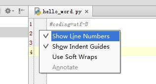
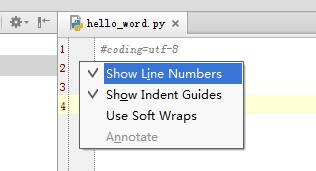

PyCharm 教程（四）显示行号
在PyCharm 里，显示行号有两种办法：
1，临时设置。右键单击行号处，选择 Show Line Numbers。
但是这种方法，只对一个文件有效，并且，重启PyCharm 后消失。

2，永久设置。File --> Settings -->Editor -->Appearance , 之后勾选Show Line Numbers。

在PyCharm 里，显示行号有两种办法：
1，临时设置。右键单击行号处，选择 Show Line Numbers。
但是这种方法，只对一个文件有效，并且，重启PyCharm 后消失。

2，永久设置。File --> Settings -->Editor -->Appearance , 之后勾选Show Line Numbers。